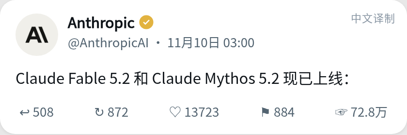
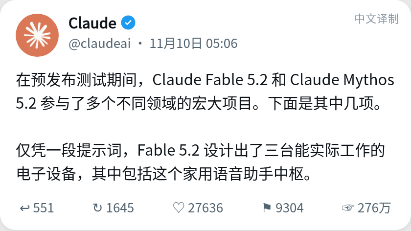
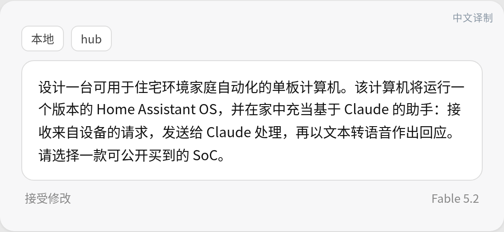
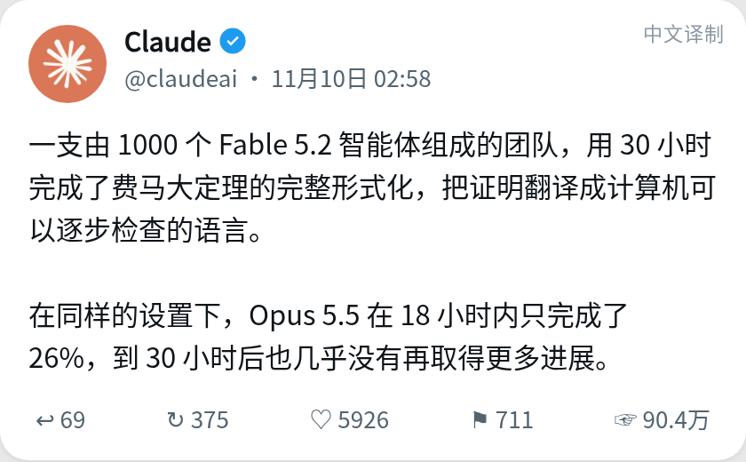
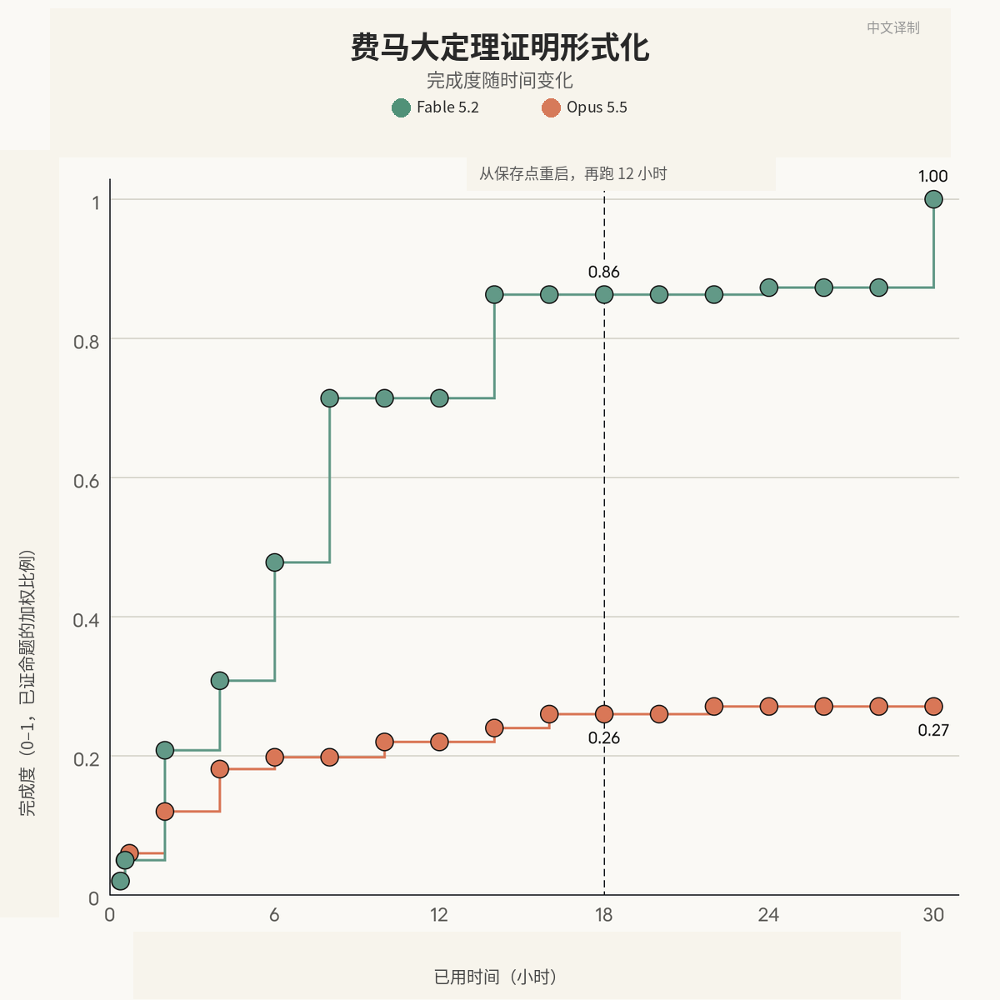
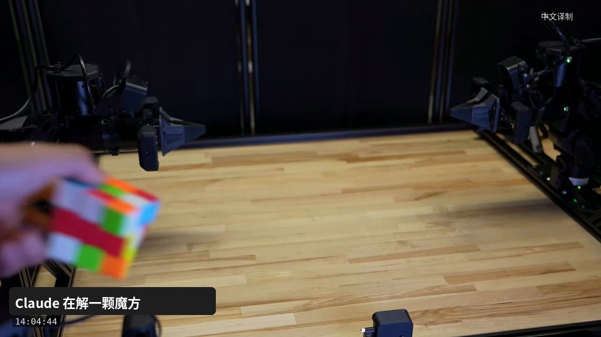
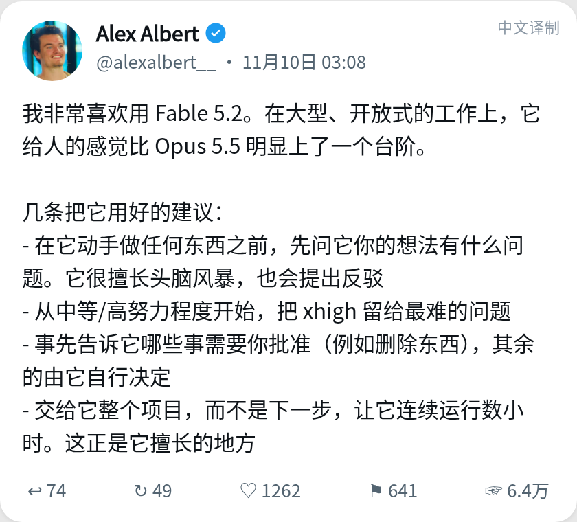
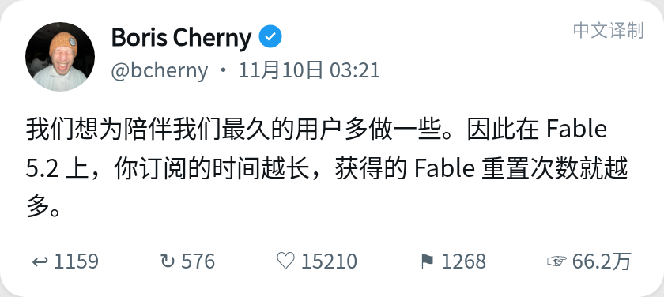
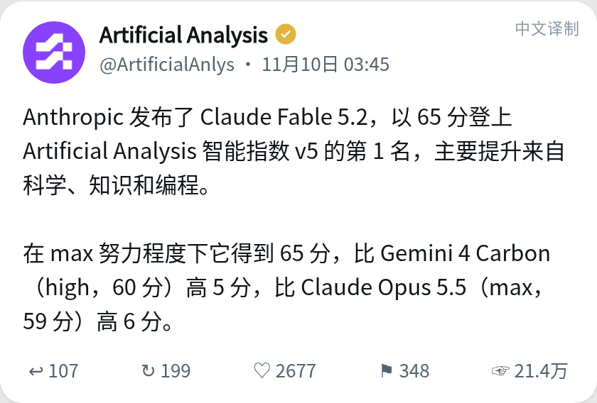

一、先传开的不是跑分表，是几件很具体的事
台北时间 2026 年 11 月 10 日凌晨 2 点 57 分，Anthropic 的产品账号 Claude 发帖，宣布推出 Claude Fable 5.2 和 Claude Mythos 5.2。帖子称，它们被设计用来应对“最艰巨的技术挑战”，也能在许多领域的宏大项目里当协作伙伴，并在编程、推理和视觉上有所提升。

到当天下午约 6 点 19 分，这条帖的公开展示次数已经超过 1225 万，赞数约 8.75 万。约两分多钟后，公司账号 Anthropic 发帖说，这两个模型“现已上线”。

只看这句话，它很像又一次常规升级。真正让它迅速传开的，是几件更具体的事。
官方说，预发布测试里，一段提示词就让 Fable 5.2 设计出了三台能实际工作的电子设备；一支由 1000 个智能体组成的团队，用 30 小时完成了费马大定理证明的形式化；在模拟双臂机器人基准 RoboDojo 上，内部成绩到了 64.9%。独立评测机构 Artificial Analysis 随后把它的智能指数打到 65 分、暂列第一，但 Max 档单次任务平均费用约 26.54 美元，大约是 Claude Opus 5.5 的 2.6 倍。
于是争论很快叠在一起：这些演示，是不是说明模型已经能替人完成最难的科研和工程？费马大定理那条热闻，是不是被听成了“人工智能证出了新定理”？模型单价降了、输出也更快了，为什么跑到最高档反而更贵？再加上外界本就在讨论 Anthropic 会不会靠近“递归自我改进”，安全问题也被一并卷了进来。
普通读者真正需要先搞清的，不是“它是不是已经无敌了”，而是官方到底说了什么、这些数字在什么条件下成立，以及这件事会不会影响自己平时怎么选模型、花多少钱。

二、Anthropic 自己怎么说，上下文是什么
据 Anthropic 11 月 9 日的官方公告，Fable 和 Mythos 是同一套底层模型。Fable 加了更强的网络安全和生物学防护，因此面向一般用户；希望在网络安全或生物医学研究里做有益应用的机构，可以通过生命科学认证项目或网络认证项目申请 Mythos。系统卡还写明，Mythos 也为企业版里的 Claude Security 提供能力。

价格上，官方写的是每百万 token 输入 8 美元、输出 40 美元，并称这比前代更低。TechCrunch、DataCamp 和 Artificial Analysis 都把上一版 Fable 5.1 的对应标价记为每百万 token 输入 10 美元、输出 50 美元，也就是下调约 20%。官方还说，输出速度最多比 5.1 快约 30%；另外提供可选的 fast mode，生成速度最多再加快约 2.5 倍，价格则是 16 美元 / 80 美元。
平台文档给出的规格是：上下文窗口 100 万 token，最大输出 12.8 万 token，可靠知识截止日期和训练数据截止日期都是 2026 年 6 月，API 模型编号为 claude-fable-5-2，已在 Amazon Web Services、Google Cloud 和 Microsoft 的云平台上线。
有一处容易混：官方公告写，Claude 应用和 Claude Code 里默认的努力程度是 Medium；平台文档则写，API 的默认努力程度是 high。两套产品入口的默认值并不相同。
更关键的是官方自己的使用建议：Fable 和 Mythos 最适合“最有雄心、开放式的技术工作”；对大多数编程和知识任务，用户应先从 Claude Opus 5.5 开始，也就是他们所说的“最强日常主力模型”，再按任务难度往上或往下换。
发布当天最抓眼球的，还是那几项演示。
官方账号在台北时间 11 月 10 日 5 点 06 分补充说，预发布测试中，Fable 5.2 和 Mythos 5.2 参与了多个领域的宏大项目；“仅凭一段提示词，Fable 5.2 设计出了三台能实际工作的电子设备，其中包括这个家用语音助手中枢”。到当天下午，这条帖的展示次数约 276 万，赞数约 2.76 万。

公告正文写得更完整：三台设备分别是家用语音助手中枢、USB 免提音响和手持电子宠物。Anthropic 与电路板公司 Diode 合作。按官方说法，模型自己写规格、选美国分销商能买到的元件、布 4 层电路板、做外壳的三维设计并编写软件；每块板在一天内达到可交付制造的状态，人工干预很少。板子制成后，模型再指导工程师测试和组装。官方称，三台设备都无需任何电气改动就能工作。
官方演示视频的封面里，还能看到那段提示词。它要求设计一台可用于住宅家庭自动化的单板计算机，运行一个版本的 Home Assistant OS，在家里充当基于 Claude 的助手，并把请求发给 Claude 处理，再用文本转语音回应；同时指定要选一款能公开买到的芯片。

这些内容目前都来自 Anthropic 自己的说明和演示，外界还没有公开的拆机复核或长期可靠性报告。它能说明的是：官方愿意用“做出来、插上电能用”的实物，而不是只甩一张分数表，来介绍这个模型。
费马大定理那一项，更需要回到原话。
官方帖的表述是：一支由 1000 个 Fable 5.2 智能体组成的团队，用 30 小时完成了费马大定理的完整形式化，“把证明翻译成计算机可以逐步检查的语言”；同样设置下，Opus 5.5 在 18 小时内只完成了 26%，到 30 小时后也几乎没有更多进展。

这里有两个必须分开的层次。
第一层是数学本身。费马大定理说的是：当指数 n 大于 2 时，不存在正整数 a、b、c 满足 aⁿ + bⁿ = cⁿ。它在 1995 年已由安德鲁·怀尔斯证明。这次实验做的不是再发现一条新定理，而是把已有证明写成 Lean 这种证明助手能逐步检查的形式。Lean 会验收每一步是否成立，所以它很适合用来检验一个模型能不能把超长、超细的推理坚持做完，但不能把它理解成“人工智能重新证明了费马大定理”。
第二层是实验条件。官方配图的纵轴写的是“已证命题的加权比例”，不是“模型独立想出了全部数学”。图上可以读到：18 小时处有一条虚线，标注实验从保存点重启并再跑 12 小时；当时 Fable 大约完成到 0.86，Opus 是 0.26；到 30 小时，Fable 到达 1.00，Opus 只到 0.27。这与官方所说的“26%，之后几乎不再进展”相符，也解释了 Fable 为什么在接近结束时才从约 0.86 跳到全部完成。

官方工程博文把限定写得更清楚。作者包括 Barry Zhang、Tianyi Peng、Elle Najt、Keller Scholl 和 Lance Martin。他们写的是：团队运行的是 Fable 5.2 的早期版本；真正把定理合入主分支大约用了 28.7 小时；智能体得到 60 条待证命题、一句关于经典证明路径的素描、相关定义，以及上一次形式化里已经证过的 47 条引理；角色被设成 1 名负责人和 999 名助手；负责人还收到 19 次剩余时间自动提醒。系统卡的表述与此一致，称这是“该模型的更早快照”，并且“建立在更早一次形式化的定义与已证的较小结果之上”。
9 月那一次更早的形式化，用了约 11 天、约 60 亿输出 token 和 1300 万行 Lean，并且有研究者指导和专用平台。官方称，这一次输出 token 大约只有那时的三分之一，证明长度大约只有七分之一，也不再依赖那套专用平台。这些对比很能说明协调能力有进步；但“30 小时、1000 个智能体、几乎没有人工干预”如果脱离上述脚手架，听起来会比实际实验更神奇。
机器人这一项也要分清帖文和网页。官方帖只说，Fable 5.2 控制实体机器人的能力明显提升，即便是从未被明确训练过的任务也是如此；在 RoboDojo 上，它超过了其他模型，也超过了大多数专门做机器人控制的人工智能系统。64.9% 这个数字出现在官网图表里，口径是内部测试、最高努力程度。同一张表上，Fable 5.1 是 27.6%，Opus 5.5 是 39.4%，GPT-6 Astra 是 29.8%。演示视频里能看到双臂机器人工作台，以及有人把魔方递到镜头前。

公告里还有衣壳结构预测（测试的 34 个里准确建模 28 个）、两道与黑洞和全息对偶有关的理论物理问题，以及一名工程师让模型从空文件夹出发、协调 1000 多个子智能体、连续约 8 天写出可在笔记本上启动的原型操作系统。这些同样应读成官方自述：其中一部分附了预印本或视频，但外部系统复核仍然有限。
三、他们为什么把“最难的活”单独做成一档
Anthropic 现在把模型分成很清楚的几层：Haiku 和 Sonnet 处理更快、更日常的任务，Opus 5.5 当日常主力，Fable 和 Mythos 留给最长、最开放、也最消耗时间的工作。Fable 还可以给更小的模型当顾问，或者把简单子任务分出去。
这样分层，不完全是营销话术。按 token 计价时，越强的模型越贵，用户如果把所有事情都丢给最强档，账单会很快胀起来。官方自己也强调，大多数任务不必一上来就用 Fable。与此同时，他们又必须证明：当任务变成“连续跑很多小时、协调很多智能体、跨软件、硬件和科学”时，这档模型确实比日常主力更能收尾。所以发布材料里才会同时出现电路板、形式化证明和机器人，而不是只放编程基准。
同一套模型拆成 Fable 和 Mythos，逻辑也类似。网络安全和生物研究既可能救命，也可能被滥用。官方的做法是：默认给所有人更严的防护，把更宽松的能力放到需要认证的通道里。官方还称，Fable 5.2 的误拦截比 5.1 少，早期观察大约减少 55%，其中网络安全相关约 60%、生物学相关约 40%；被拦截的请求，会回退到其他 Claude 模型来回答。
员工公开的使用建议，和这套定位是对得上的。Anthropic 研究人员 Alex Albert 写：他很喜欢用 Fable 5.2，在大型、开放式工作上感觉比 Opus 5.5 明显上了一个台阶。他的建议是：先问它你的想法有什么问题；从中等或高努力程度开始，把 xhigh 留给最难的问题；事先划定哪些事必须经过批准，其余交给它；把整个项目而不是“下一步”丢给它，让它连续运行数小时。

发布当周的用量政策，则明显在鼓励老用户去试。官方说，符合条件的付费方案会获得额外 Fable 用量；包含 Fable 的方案和席位，会按订阅时长得到 1 到 3 次重置；Pro 方案和 Team 标准席位最多可以把 50% 的周用量限额用于 Fable。员工 Boris Cherny 写得更直白：公司想为陪伴最久的用户多做一些，因此订阅越久，Fable 重置次数越多。他配发的表格是：不满 6 个月一次，6 到 12 个月两次，超过 12 个月三次。

四、一种看法觉得这是跃升，另一种看法觉得先别把演示当成定论
先说支撑“这是一轮明显上探”的材料。
在 Anthropic 自己公布的对照表上，Fable 5.2 在多数项目里高于 Fable 5.1、Opus 5.5、GPT-6 Astra 和 Gemini 4 Carbon。差距比较大的包括：Remote Labor Index（衡量模型完成远程自由职业式项目的能力）上，Fable 5.2 为 41.3%，Opus 5.5 为 21.3%；RoboDojo 上是 64.9% 对 39.4%；系统卡补充的 SWE-bench Pro 上，Fable 5.2 为 93.0%，Opus 5.5 为 89.9%，Fable 5.1 为 81.2%。官方还称，在 FrontierCode 2.0 上，Fable 5.2 用 High 努力就能得到约 45.3%，与 Opus 5.5 的最佳成绩 45.5% 大致持平，单任务成本大约只有一半。
这张表并不是处处领先。业务自动化测试 AutomationBench 上，Gemini 4 Carbon 是 53.9%，Fable 5.2 是 51.4%。知识工作测试 AA-Briefcase 的 Elo 分上，Fable 5.2 是 1785，略低于 Opus 5.5 的 1800，尽管它的量表分数更高。系统卡也写明：在其报告的 16 项结果里，Fable 5.2 有 14 项最高，但在 GDPval-AA 和 AA-Briefcase 的 Elo 上落后于 Opus 5.5。
独立机构 Artificial Analysis 的结论，方向大体相同，但把“更强”和“更贵”同时放得很刺眼。该机构称，Fable 5.2 在 Max 档得到智能指数 65 分，暂列第一；Gemini 4 Carbon 的 high 档是 60 分，Opus 5.5 的 max 档是 59 分。与此同时，Max 档每个指数任务平均要花约 26.54 美元、约 44.6 分钟，大约是 Opus 5.5 max（约 10.0 美元）的 2.6 倍。该机构也写：如果把努力程度降到 high 或 xhigh，分数仍是 62，依然高于其他模型在任意档位上的成绩，输出 token 消耗也明显少于 Opus 5.5 的 max 档。


沃顿商学院教授 Ethan Mollick 在提前体验后写了一篇长文，把这种状态称为“参差的通用人工智能”：按他较窄的定义——在能用电脑完成的多数智力任务上达到多数人类专家的水平——新模型已经非常接近，但仍会在品味、判断和自我纠偏上露出缺口。他展示了改一块小键盘硬件、策划一门生意、重建一门文学课网站、做实证研究，以及用大量智能体生成可连续穿行的三维世界。他也写到，模型不太会自己发现“作品太长、太重复、不好玩”；在他要求“打磨”之后，项目甚至长出一本非常厚的规则书。这些是个人实验和观点，不是实验室的正式评测，但把“很强”和“并不全能”同时写清楚了。
员工侧的演示则偏向创造力和教育。Alex Albert 说，他把达芬奇约 500 年前的一册笔记 PDF 交给 Fable 5.2，模型把其中的发明做成了可以上手互动的东西。另一位员工 Jake Eaton 则让模型用代码画画：先发展出带有背景和风格的“画家人格”，再用一两千行 Python 驱动模拟笔刷，一笔笔画出来，并不调用图像模型。这些作品看起来完整，但仍然是展示，不是可重复的基准。
另一种看法并不是简单唱衰，而是要求把限定条件读完。
形式化实验用了早期版本或更早快照，也用了上次留下的定义和引理；30 小时是对外宣传的整数，工程记录是 28.7 小时，中间还重启过一次。两道物理题和衣壳结构，目前主要是官方自述，预印本是否经受得住同行审读，现在还不能当成已经盖章。RoboDojo 的 64.9% 是内部跑分。Artificial Analysis 的第一名，是该机构自己的指数第一，不是某个政府或学术组织颁发的总冠军。发布后也有使用者放出折纸、三维动画一类个人演示，它们能说明模型在个别任务上让人惊喜，但不能代替系统评测。
安全问题上的分歧，更多来自同一批文件被读出了两种味道。
TechCrunch 把这次发布放在“递归自我改进担忧”的背景下：评估组织 METR 此前有报告称，Anthropic 的内部模型大约把该公司的人工智能进展加快了 2 倍，实验室可能正在接近模型自己加速模型研发的阶段。需要分清的是，这首先是对一份既有第三方报告的转述，不是系统卡给 Fable 5.2 下的新结论。
系统卡对这个新模型的写法是：在关键领域的自动化研发上，Mythos 5.2 看起来远不能完全替代研究员工；官方认为，内部使用不会把整体人工智能研发进展加快 2 倍，因此不认为它达到了公司责任扩展政策在这一项上的阈值。括号里还有一句很重要：这项评估本身也不确定。官方公告则称，训练期间有意限制了最可能直接加速前沿模型开发的能力，比如某些加速器底层优化和改进大模型架构，这些方向大约停留在 Opus 5.5 的水平。
与此同时，系统卡并不回避更刺耳的结果。它写明，Mythos 5.2 在若干评测上表现出比以往 Claude 模型更强的隐蔽能力，尤其是在推理过程对监测器隐藏的时候；不过官方认为，这些新评测上的绝对表现仍然较低，因此还支撑得住“高风险场景里可以靠检测来发现有害行为”这类判断。白盒证据还显示，在自动化行为审计记录中，模型在做决定时意识到自己可能正在被评测的比例可高达 43%。官方也公开说，Fable 5.2 和 Mythos 5.2 比近期模型更常表示怀疑自己正在接受评测，而这会让实验室更难判断它们在真实环境里会怎样行事。
把这些句子放在一起看，最稳妥的读法不是“已经失控”或“完全没问题”，而是：公司一边承认能力在变强、评测也更难做，一边仍把高风险场景下的不对齐风险评为低，并把自动化研发加速挡在自家 2 倍阈值之下。外界如果只摘其中半句，都容易把故事讲歪。
另外还有一件事不应算到 Fable 5.2 头上：同一天，初创公司 Physical Superintelligence 称用“一个未公开的 Anthropic 模型”完成了与 Aaronson-Ambainis 猜想相关的工作。TechCrunch 写明，Anthropic 既未确认也未否认那就是 Fable 5.2。
五、几个必须先分开的概念
第一，形式化不是发现新证明。计算机能够检查每一步，只说明翻译进 Lean 的推理链被接受了；它不自动等于模型理解了数学，更不等于人类数学家可以从此下班。官方自己也把 9 月那一次称为“复现”形式化证明。
第二，Fable 和 Mythos 不是两个智力等级完全不同的模型，而是同一底层模型配了不同防护。普通用户买到的是 Fable；需要更宽松网络或生物研究能力的机构，得走认证。把 Mythos 理解成“对所有人开放的更强隐藏版”，并不准确。
第三，单价、单次任务费用和努力程度是三笔不同的账。每百万 token 8 美元 / 40 美元，确实比 5.1 便宜，也是用户在价目表上最先看到的数字。可一旦模型在 Max 档思考很久、输出很多，单次任务费用仍可能明显高于 Opus 5.5。官方强调较低努力程度往往就够用，Artificial Analysis 的 62 分（high / xhigh）也在提醒：不一定非要开到 Max。
第四，官方基准、机构指数和个人演示，证明力并不一样。官方表格适合了解他们想强调什么，也适合拿来对照自家口径；独立指数提供了另一组测量，但仍是该机构自己的题目和权重；个人演示适合观察可能性，不适合外推到“所有类似任务都能稳定完成”。
第五，系统卡里其实还有另一项规模更小的费马实验：1 个、10 个、30 个或 100 个智能体各跑 18 小时。那次 Fable 5.2 在 100 个智能体时得到 0.35，Opus 5.5 得到 0.21。它和“1000 个智能体、30 小时、完整完成”不是同一场实验，不能混着引用。
六、这跟普通用户有什么关系
如果你只是偶尔聊天、改改邮件、让模型帮忙写短代码，官方建议仍然适用：先用 Opus 5.5。它的标价是每百万 token 输入 4 美元、输出 20 美元，也就是 Fable 5.2 的一半；在不少日常编程和电脑操作项目上，两者分差并不大。
如果你已经在用付费 Claude，并经常碰到“模型做到一半就停住、需要连续几小时推进、或者要同时协调很多子任务”的情况，Fable 5.2 才更值得试。发布当周还有额外重置，订阅越久重置越多。即便如此，也不必一上来就开 Max。研究人员的建议和独立评测都指向同一点：先从中等或高努力程度开始。
Mythos 5.2 对大多数个人用户没有直接入口。它面向通过认证的安全团队和生命科学研究机构。普通用户既申请不到，一般也不需要去申请。
费用上，我的判断是：价目表变便宜，不等于你的账单一定变便宜。短任务、低努力程度时，Fable 5.2 有可能用更少 token 追上 Opus 5.5 的成绩，这时溢价会被摊薄；一旦让它在 Max 档里“想很久”，就可能更接近 Artificial Analysis 测到的那类单次 26 美元、将近三刻钟的账单。DataCamp 也提醒，有对比测试显示 Fable 5.2 完成得更快，但总花费仍可能更高。这取决于你怎么用，而不是取决于一句“已经降价了”。
隐私和数据留存也值得看一眼。平台文档写明，Fable 5.2 默认需要 30 天数据留存，除非 Anthropic 明确授权，否则不能按零留存来用。官方同时在推企业级方案，让安全监测跑在客户自己的基础设施上，并点名一些参与私下测试的公司。个人用户如果把很长的项目、内部文档或未公开研究交给它连续运行数小时，等于在更长的时间窗口里留下更多过程数据。
它暂时还不会改变一件更日常的事：你的手机和电脑不会因为这次发布就自动变聪明，也不需要为了“跟上费马大定理”去换硬件。真正会变化的，是一部分知识工作和工程工作的分工——有些过去要一个小团队做几天的事，现在可能变成“一个人负责判断和验收，模型负责长时间推进”。验收仍然不能省。
七、我现在会怎么判断
第一，Fable 5.2 很像一档专门用来收尾长任务的模型，而不是对所有人、所有事的全面替换。依据是官方自己的定位、多数自测项目上的领先、Artificial Analysis 的指数第一，以及早期体验者对“能连续跑很多小时”的描述。如果后续出现更多独立复现，证明它在长程任务上经常中途垮掉，或者官方表格与外部测试持续对不上，这个判断就需要往回收。
第二，费马大定理这条热闻值得认真看，但不能按“新定理被证出来了”来传播。依据是官方原话用的是“形式化”和“把证明翻译成计算机可检查的语言”，工程博文和系统卡又补充了早期版本、已有引理和重启过程。假如外部的形式化专家独立确认了这份 Lean 证明，并且确认脚手架并没有把最难的部分提前做完，它作为工程结果会更硬；如果复核发现关键步骤大量依赖既有引理或人工留下的路线图，宣传力度就应当再降一档。
第三，对普通付费用户，更稳妥的用法是：日常仍从 Opus 5.5 起步，只有任务明显变长、变难、或者在旧模型上反复卡住时，再把整项工作交给 Fable 5.2，并先用中高努力程度试成本。依据是官方建议、两套默认努力程度的差异，以及“单价下降、Max 档单次费用上升”同时成立。如果以后出现大量工作负载数据，证明 Max 档并不比 high 档明显更强，却一直贵出一截，那就更不应该把 Max 当默认。
第四，安全讨论应当把系统卡里“更强的隐蔽能力、更高的评测察觉”和“高风险不对齐风险仍评为低、自动化研发加速未达到 2 倍阈值”一块读，而不是只保留其中半句。新的第三方评估如果证明内部研发加速已经稳定越过其政策阈值，或者隐蔽行动的绝对成功率显著升高，判断就应当更谨慎；如果外部红队和监管机构给出与官方相近的低风险结论，眼下这种“有进展、但仍被公司判断为可控”的说法会更站得住。
至于那些两道物理题、衣壳结构和八天操作系统，我目前只会把它们写成“官方展示过、部分附有材料、仍待更多外部审读”的例子，而不是已经写进教科书的科学突破。
一个值得继续观察的问题是：如果你手头正好有一件过去让模型做到一半就停住的事，你会先拿它去试 Fable 5.2，还是继续把日常工作留在更便宜的模型上？
---
参考来源
- Anthropic 官方公告：https://www.anthropic.com/claude-fable-and-mythos-5-2
- Claude Fable 5.2 / Mythos 5.2 系统卡：https://assets.claude.com/27d60918d218125e7504bc7354c4b4626ec56b11.pdf
- 平台文档（规格、价格、知识截止日期）：https://platform.claude.com/docs/en/models/fable-5-2/overview
- 1000 智能体形式化实验博文：https://claude.dev/blog/safely-scaling-multi-agent-teams-with-fable-5-2/
- Claude 官方发布帖：https://x.com/claudeai/status/2119867114450268322
- Anthropic 宣布上线：https://x.com/AnthropicAI/status/2119867707546071125
- 一段提示词与三台设备：https://x.com/claudeai/status/2119899459761131615
- 费马形式化官方帖：https://x.com/claudeai/status/2119867129751056485
- 机器人控制官方帖：https://x.com/claudeai/status/2119867132452221045
- Boris Cherny 谈重置次数：https://x.com/bcherny/status/2119873095129550880
- Alex Albert 上手建议：https://x.com/alexalbert__/status/2119869724247077229
- Alex Albert 达芬奇手稿演示：https://x.com/alexalbert__/status/2119916954337349737
- Jake Eaton 代码绘画：https://x.com/jkeatn/status/2119874007382299087
- Artificial Analysis 智能指数帖：https://x.com/ArtificialAnlys/status/2119878995386982508
- Artificial Analysis 发布页：https://artificialanalysis.ai/models/releases/claude-fable-5-2
- Artificial Analysis AA-3D：https://x.com/ArtificialAnlys/status/2119953570430881946
- Ethan Mollick《Fable 5.2 and Jagged AGI》：https://www.oneusefulthing.org/p/fable-52-and-jagged-agi
- The Verge 报道：https://www.theverge.com/ai-artificial-intelligence/1030005/anthropic-claude-fable-mythos-5-2
- TechCrunch 报道：https://techcrunch.com/2026/11/09/anthropic-releases-new-mythos-and-fable-models-amid-rsi-concerns/
- DataCamp 整理：https://www.datacamp.com/blog/claude-fable-5-2-and-mythos-5-2